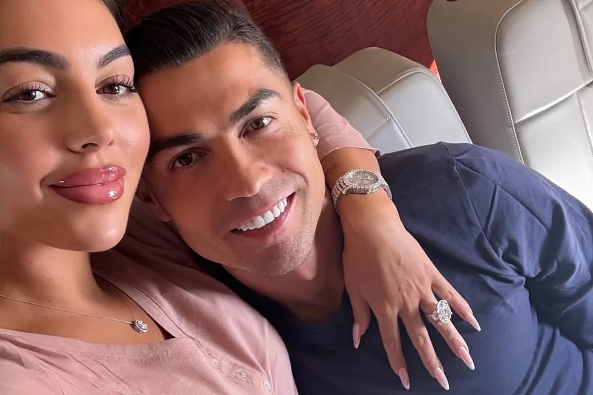

Quote Madness — 'The World Cup Is Not My Dream'
The 2025 Morgan interview: In November 2025, the 40-year-old Ronaldo sat down again with old friend Piers Morgan. This time he dropped the bombshell — 'the World Cup is not a dream for me', instantly detonating global opinion and being slammed as 'self-justification taken to the extreme'.
The exact quote: Ronaldo's words: 'If you ask me, "Cristiano, is winning the World Cup a dream?" No, it is not. Why should one tournament, six or seven matches, define whether I'm the best in history?' The football world erupted.
'First, second and third in history': He immediately reaffirmed his tired refrain — 'I am the first, second and third player in history'. This self-canonisation on the one hand, with no World Cup to back it up on the other, was slammed by Goal.com as 'an absurd exercise in self-delusion'.
Teammates feel betrayed: The most wounded were his Portugal teammates. On Reddit one comment put it bluntly: 'Hearing the captain say the World Cup isn't a dream — how chilling for the teammates.' A whole squad fighting for the World Cup was doused in cold water by the captain's 'I don't care'.
The shadow of Messi's title: The timing was highly delicate — Messi had led Argentina to the 2022 World Cup, completing 'the GOAT's final puzzle'. Ronaldo's 'the World Cup doesn't matter' was widely read as sour grapes, a psychological defence.
Brazil and others push back: Brazilian media and legends from the football kingdom weighed in to stress that the World Cup is 'every player's ultimate dream'. With the legacies of Pelé and Ronaldo (R9) staring him down, Ronaldo's 'it doesn't matter' looked both ignorant and arrogant at the level of football culture.
The interview's blowback: Morgan presumably meant to 'rehabilitate' Ronaldo; it backfired. ESPN, the BBC and other mainstream outlets unanimously criticised; fans mocked his 'stubbornness'. The interview did not reshape his image — instead it cemented Ronaldo's 'sore loser who still fronts' persona even deeper.